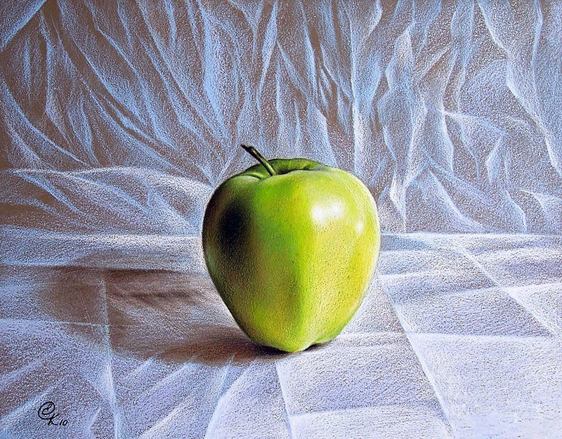

Реалізм
Реалізм - поняття, що характеризує пізнавальну функцію мистецтва: правда життя, втілена специфічними засобами мистецтва, міра його проникнення в реальність, глибина і повнота її художнього пізнання.
Він зародився близько 20—30-х pp. XIX ст.
Українське образотворче мистецтво розвивалося під впливом реалістичних тенденцій, які були продемонстровані Товариством пересувних художніх виставок, душею та організаторами якої були І. Крамськой та художній критик В. Стасов. Членами товариства були і українські майстри.
Виставки експонувалися в Києві, Харкові, Одесі та інших містах України, викликали інтерес і позитивно сприймалися громадськістю.
У центрі уваги художників-реалістів було буденне життя, з його проблемами, конфліктами, людськими думками. Під впливом художніх принципів пересувних виставок образотворчого мистецтва чимало художників України переходили на позиції реалізму.
На зразок російських передвижників у Києві в 1887 р. було створено товариство художніх виставок, а офіційно оформлено у 1893 p., яке організувало 6 виставок, активну участь в яких брали М.Пимоненко, В.Менк, С.Костенко та ін.
Об'єктивне відображення суттєвих сторін життя в поєднанні з висотою і істинністю авторського ідеалу.
 |
Реалізм як художній метод передбачає правдиве відображення реальної дійсності, правдивість відтворення не лише деталей, а й типових характерів у типових обставинах.
Творчість представників цього художнього напряму вирізняла широка палітра проблем, що піддавалися аналізу: психологічні прояви людських характерів, побут героїв, світ речей і природи.
Представники цього напряму шукали не красу, а правду, їхній творчості притаманний більший аналітизм, чіткість і конкретність у висловлюваннях, жорстке руйнування ілюзій, тісний зв´язок з конкретною ситуацією і обставинами.
Реалістичні тенденції в 20 ст. характеризуються пошуками нових зв'язків з дійсністю, нових образних рішень, нових засобів художньої виразності.
Трохи пізніше виникає новий напрям у мистецтві - гіперреалізм (Фотореалізм).
Художники цього напряму імітували фото живописними засобами на полотні. Вони зображували світ сучасного міста: вітрини магазинів і ресторанів, станції метро і світлофори, житлові будівлі і перехожих на вулицях. При цьому особлива увага зверталася на блискучі, що відбивають світло поверхні: скло, пластик, полірування автомобілів і ін.
Гра відображень на таких поверхнях створює враження взаємопроникнення просторів. Метою гіперреалістів було зобразити світ не просто достовірно, а надреально. Для цього вони використовували механічні способи копіювання фотографій та збільшення їх до розмірів великого полотна (диапроекції і масштабну сітку).
Фарбу, як правило, розпилювали аерографом, щоб зберегти всі особливості фотозображення, виключити прояв індивідуального почерку митця.
Фотореалізм поставив своїм завданням загострити наше сприйняття буденності, символізувати сучасне середовище, відобразити наш час у формах «технічних мистецтв», він широко поширився саме в нашу епоху технічного прогресу.
Фіксуючи і оголюючи сучасність, приховуючи авторські емоції, фотореалізм у своїх програмних роботах опинився на кордоні образотворчого мистецтва з самим життям.
|  | ||
Художники-гіперреалісти – справжні чарівники, адже їх картини практично неможливо відрізнити від фотографій.
Вгору